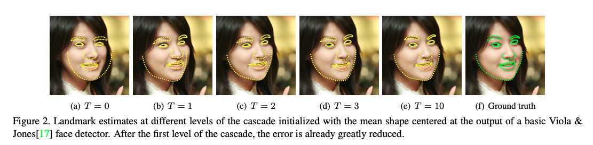

Dlib 库中的 shape predictor 是基于论文： One Millisecond Face Alignment with an Ensemble of Regression Trees 中提出的 ERT(Ensemble of Regression Trees) 级联回归树进行实现的, 通过进行特征选择并最小化损失函数.
记$x_i \in R^2$ 为图片$I$中的第 $i$ 个面部特征点,包括了该点的 $(x,y)$ 坐标, 同时使用向量 $S = (x_1^T, …, x_p^T)^T \in R^{2p}$ 作为图片 $I$ 中的所有 $p$ 个面部特征点, $\hat{S}^{(t)}$ 为当前对于 Ground Truth $S$ 的预测. 级联中的每一个回归器 $r_t( . , . )$ 预测基于当前的预测 $\hat{S}^{(t)}$ 的更新向量, 并添加到当前的形状预测器中来提高预测结果:
\[\hat{S}^{(t+1)} = \hat{S}^{(t)} + r_t(I, \hat{S}^{(t)})\]因为$r_t$的预测是同时基于例如像素密集度这种从图像 $I$ 中计算的特征, 并且根据当前的图像预测器 $\hat{S}^{(t)}$ 作为索引. 这样为整个过程提供了几何不变性.
在训练过程中, 每一个回归器 $r_t$ 使用梯度树提升(gradient tree boosting)与误差损失平方和(sum of square error loss).
使用一个三元组来初始化最初的回归函数$r_0$, 其中包括一个面部图片, 一个初始形状预测和一个目标更新步长 $(I_{\pi_i}, \hat{S}_i^{(0)}, \Delta S_i^{(0)})$.
其中:
\[\pi_i \in \{1, ..., n\} \\\] \[\hat{S}_i^{(0)} \in \lbrace S_1, ..., S_n \rbrace \not S_{\pi_i}\\\] \[\Delta S_i^{(0)} = S_{\pi_i} - \hat{S}_i^{(0)}\]三元组的总数为 $N = nR$, $R$ 为用于每一张照片的初始化数量. 每一个初始化的形状预测器从${ S_1, …, S_n}$ 中均匀采样.
输入: 三元组
\[\{(I_{\pi_i}, \hat{S}_i^{(t)}, \Delta S_i^{(t)})\}_{i=1}^N\]和收缩因数$0 < \gamma < 1$
初始化:
\[f_0(I, \hat{S}^{(t)}) = {argmin}_{\gamma \in R^{2p}} \sum_{i=1}^N || \Delta S_i^{(t)} - \gamma||^2\]对于回归器中的梯度提升树 k = 1, …, K:
输出 $r_t(I, \hat{S}^{(t)}) = f_K(I, \hat{S}^{(t)})$
通过上面的算法我们可以得到回归预测器$r_0$, 同时用于训练的初始三元组通过设定:
\[\hat{S}_i^{(t+1)} = \hat{S}_i^{(t)} + r_t(I, \hat{S}^{(t)}) \\ \Delta S_i^{(t+1)} = S_{\pi_i} - S_i^{(t+1)}\]被更新为了$(I_{\pi_i}, \hat{S}_i^{(1)}, \Delta S_i^{(1)})$, 对于下一个回归器 $r_1$,
在回归器的训练过程中, 关键点在于每个回归器内的梯度提升树对残差目标的拟合效果. 在文中共提出了三个方面:
具体细节可以看原论文.

该算法给dlib库中的shape predictor提供了理论基础, 并且在dlib中最终选择使用68个landmark来让上文的级联回归树进行拟合, 在原文中也测试了400, 200, 80, 40, 20 等不同数量的初始形状数量.